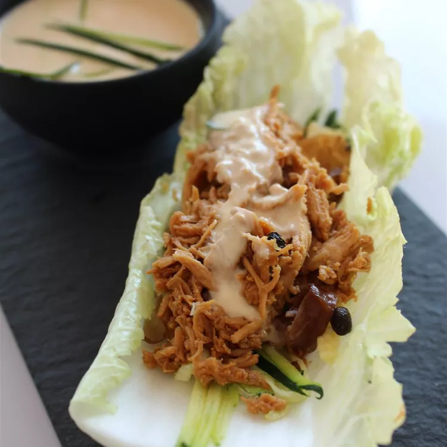

Home
Easy Chicken Lettuce Wraps

Recipe description
These chicken lettuce wraps are made with shredded roast chicken,
carrots, water chestnuts, and a creamy Asian-style dressing.
They're easy to prepare, refreshing,
and great for summer nights when you don't want to cook.
Ingredients
- 1 deli-roasted chicken, meat removed and shredded
- ½ cup shredded carrots
- ½ cup chopped water chestnuts
- ⅓ cup Asian-style salad dressing of your choice
- ¼ cup plain greek yogurt
- A pinch of red pepper flakes
- 1 head Boston lettuce leaves
Steps
- Mix chicken, carrots, and water chestnuts together in a large bowl.
- Stir salad dressing and yogurt together in a separate bowl until smooth; pour over the chicken mixture and toss to coat.
- Spoon chicken mixture into lettuce leaves. Season with red pepper flakes.